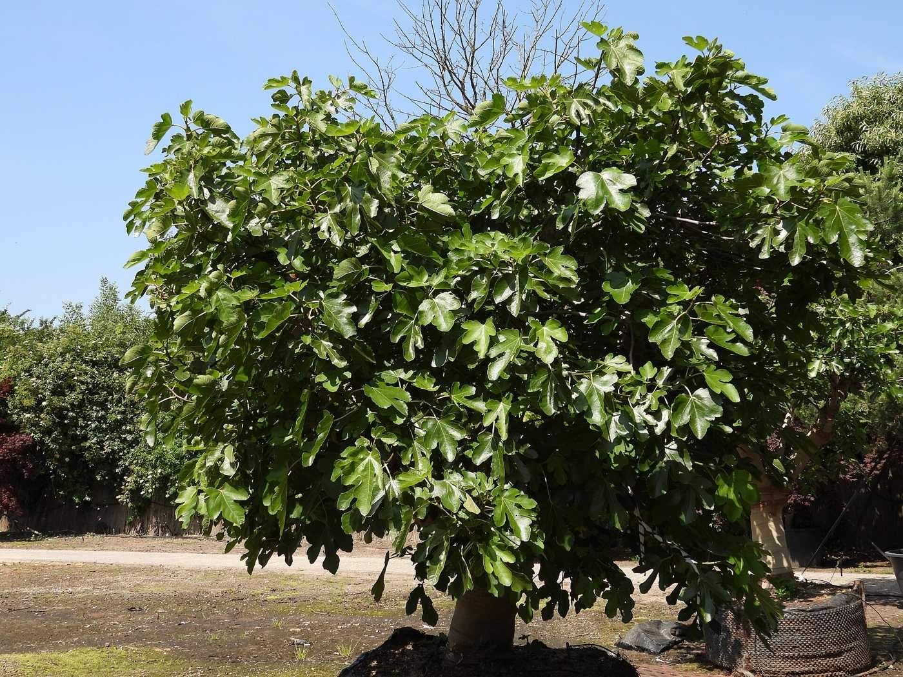

制作側の連想
ハンドパペットを、配置図にしてみる
このサイトは、手にはめて動かす布の人形(ハンドパペット)を図にしたつもりで作りました。六つの部位に番号をふり、上の図と並べています。制作側の連想で、お店の理念・由来とは無関係です。実在の製品の仕様を示すものでもありません。
凡例
六つの部位
- 1頭部丸く縫い上げた頭の本体。中に綿や詰め物が入り、ここで全体の形が決まる。
- 2口(上あごと下あご)親指と他の指で開閉する、二枚の板を布でくるんだ部分。開け閉めの動きを担う。
- 3目(ボタン目)頭の前面に縫い付ける二つの丸い飾り。縫い付ける位置で表情が変わる。
- 4胴(ボディの布)手をすっぽり包む筒状の布。肌ざわりや色は、この面で決まる。
- 5腕(横の袖)胴の左右に伸びる細い袖。先端に指を入れると、腕の動きがつく。
- 6裾口(手を入れる口)胴の下側にある開口部。ここから手を差し込み、頭と腕を操る。
ギャラリー(イメージ)




ご案内
お店のこと(確認できたものだけ)
| 所在地 | 〒389-0111 長野県北佐久郡軽井沢町長倉２２１３−８ |
|---|---|
| 電話 | 準備中 |
| 営業時間 | 準備中 |
| 定休日 | 準備中 |
| ご予約 | 準備中 |
| 駐車場 | 準備中 |
| SNS | Instagram @_01bakery_ |